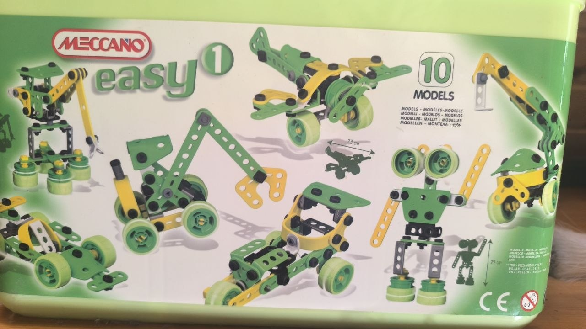
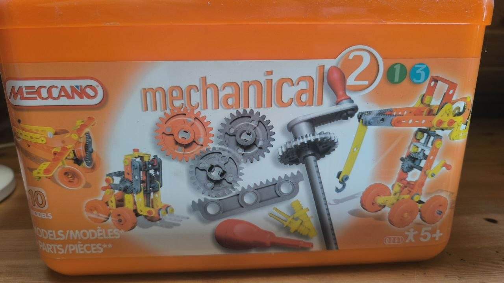
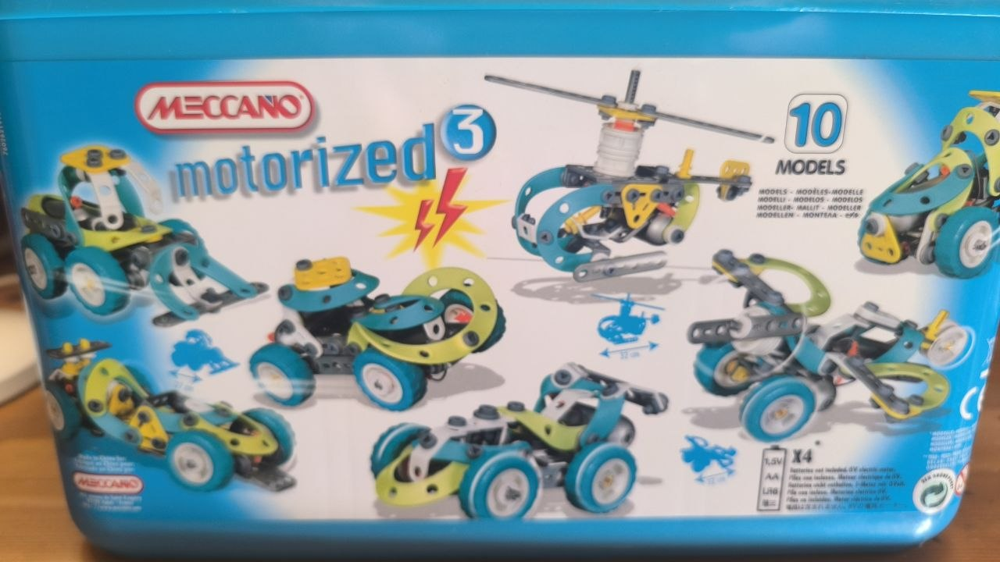
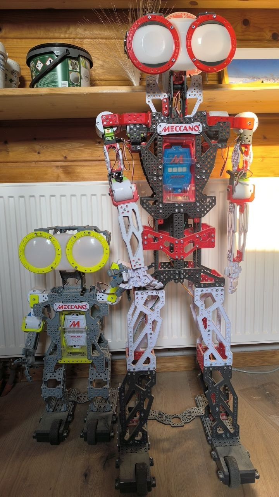

From Easy 1 to Meccanoid
A Meccano progression, built one tin at a time
Meccano has a way of sneaking up on you. It starts as a tin of nuts, bolts, and strips that a five-year-old can turn into a wobbly car in twenty minutes — and it ends, if you keep going long enough, with an app-controlled, voice-responding robot standing in the living room. Over the years, that's exactly the path this collection followed, one tin at a time.
1. Easy 1 — first bolts, first wheels
The entry point: ten simple models, basic nuts and bolts, and just enough structure to teach the core idea — parts connect, and connected parts can move. Nothing here requires more than fingers and patience, which is exactly the point. This is where "building something" first became a thing my kids wanted to do rather than something I suggested.

2. Mechanical 2 — gears, cams, and levers
The second tin steps up the mechanical vocabulary: gears, cams, and levers, still ten models, but now the models actually demonstrate mechanical principles rather than just holding together. This is the tin where "why does it move like that" starts being answerable — and worth answering.

3. Motorized 3 — the first powered movement
The third tin adds an actual motor, and with it, the first taste of something building itself into motion under its own power rather than being pushed by hand. Ten more models, but a real conceptual jump: from a mechanism to a machine.

4. Meccanoid — construction set becomes robot
The endpoint of this particular ladder: two Meccanoid robots, one considerably larger than the other, both fully articulated, motorized, and programmable — controllable via app, capable of recording and replaying motions, and (depending on the model) responding to voice. This is where the mechanical-construction lineage and the electronics/programming lineage genuinely converge: the same nuts-and-bolts logic from the Easy 1 tin, now driving a machine that can be coded.
It's a satisfying bookend to the progression — the same underlying idea (parts connect, connected parts move) scaled all the way from a five-minute toy car to a robot you can program.

Why this matters now
Like the classic robotics fleet on the neighboring page, this wasn't built with any grand plan — just a household habit of always having the next tin around once the last one got easy. But the shape of it is the same shape running through everything else on this site: start simple, add complexity one deliberate step at a time, and eventually end up somewhere genuinely sophisticated without ever having made a single overwhelming leap.